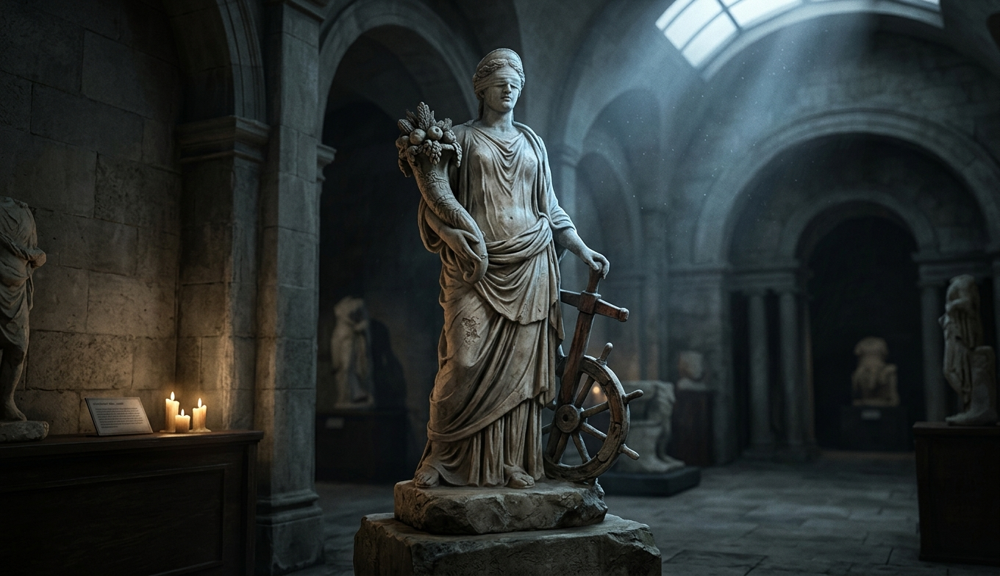
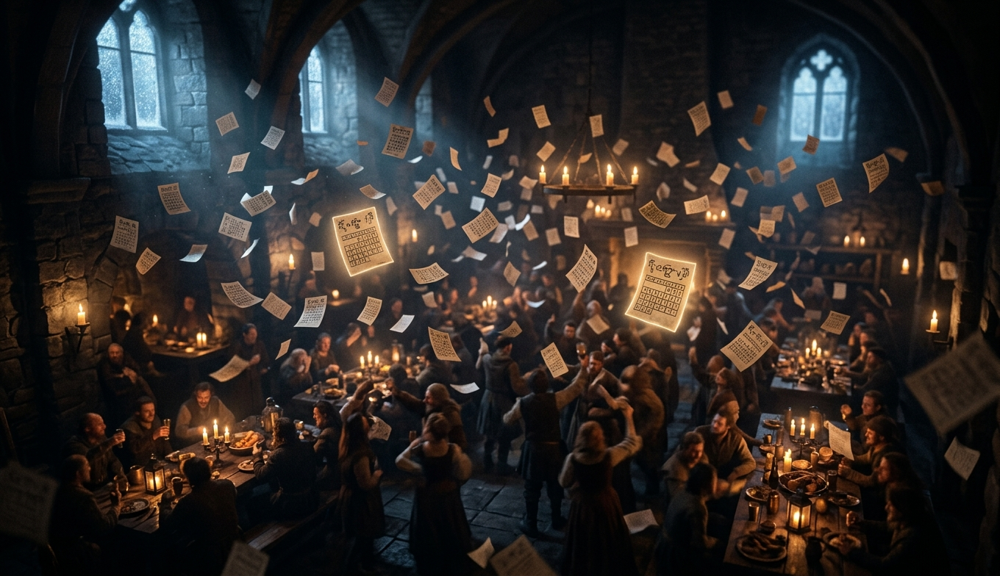
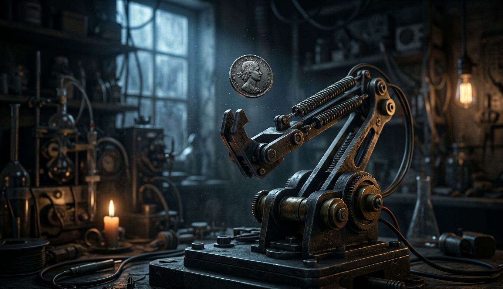
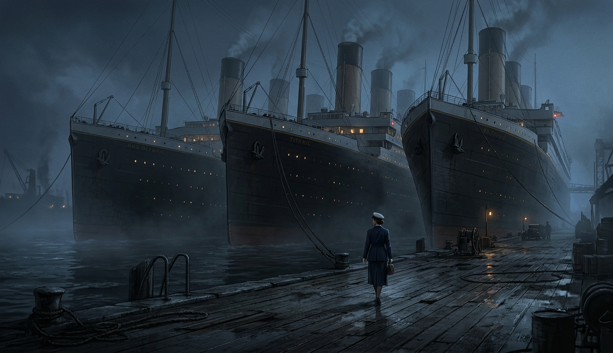
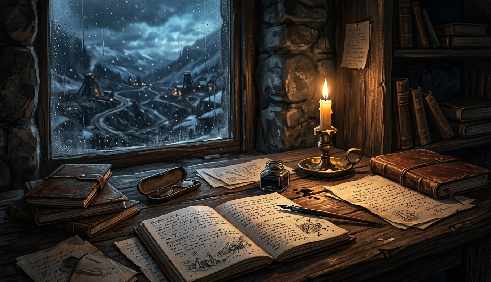
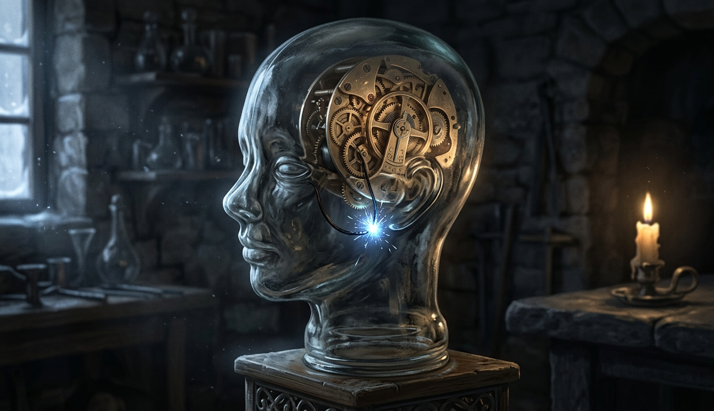
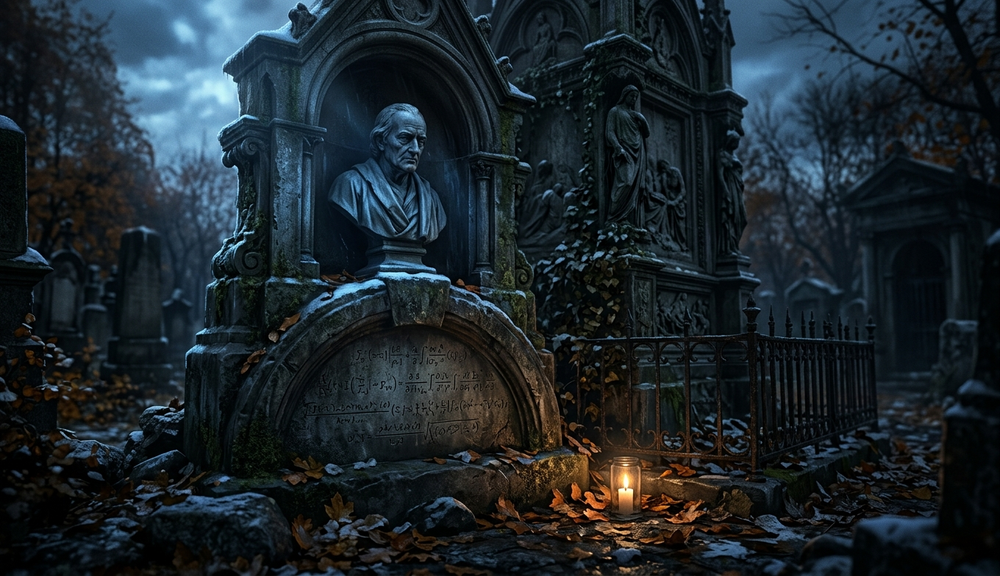
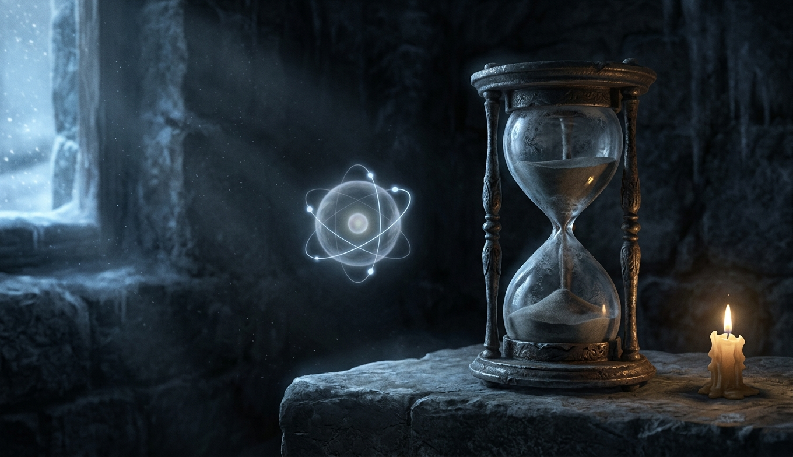

Прежде чем спорить о случайности, стоит посмотреть, что о ней уже знает язык. Он знает многое: в каждом европейском слове для случая сидит глагол «падать», а богиня, которая за него отвечает, стоит с повязкой на глазах. Язык не сказал «причины нет». Он сказал «я не видел, откуда прилетело».

Первая и самая мягкая ступень. Причина тут не спрятана и не сложна, она арифметическая, и мозг её просто не умеет чувствовать. Мы хорошо считаем до семи и плохо до миллиарда, поэтому любое совпадение кажется посланием. Эта глава про то, как выглядит мир, если считать знаменатель.
Вторая ступень. Причина была всегда, но её ещё не открыли, и на месте причины стояло слово. Холера «от дурного воздуха», чума «за грехи», молния «куда бог пошлёт», больной ребёнок «так вышло». У каждого из этих слов есть год и фамилия, когда его заменили на механизм. Эта глава про то, что слово «случайно» имеет срок годности.
Третья ступень. Механизм открыт, закон написан, в учебнике всё есть. Не хватило конкретных цифр: где была пылинка, что напечатала газета, насколько тонкий снег. Здесь «случайно» уже не прикрывает незнание науки, оно прикрывает отсутствие датчика в нужной точке. И в этой главе будет самый личный слайд лекции.

Четвёртая ступень. Закон известен полностью, это школьная механика. Данных тоже в принципе достаточно. Не хватает только мощности и точности, чтобы досчитать до конца. Удивительно другое: на этой ступени стоят все устройства, которые человечество построило специально, чтобы получать случайность. И ни одно из них её не производит.

Между ступенями лестницы лежит самый толстый слой «чистых случайностей»: невероятные совпадения, трижды выжившие, семь молний в одного человека. Здесь причина не спрятана ни в науке, ни в данных. Она спрятана в вопросе: мы спрашиваем «какова вероятность, что это случилось с ним», а должны спрашивать «сколько было тех, с кем это могло случиться».

Короткая глава про случаи, где данные не просто лежали не там, их никто не собирал вовсе. Три истории: одна про то, как память дорисовывает предсказание после события, одна про то, как легенда живёт без единого документа, и одна, в которой лекция честно разводит руками. Она тут для того, чтобы тезис не выглядел слишком гладким.

Пятая ступень лестницы. Когда все внешние причины разобраны, остаётся одна, которую мы считаем своей: решение. «Просто решил свернуть», «захотелось», «интуиция». Здесь слово «случайно» прячется за словом «Я», и это мост к прошлой лекции про состояние. Если решение имеет причину, лестница закончена. Если нет, у случайности есть дом.

Первая бездна. Единственная величина в физике, которая по определению измеряет, сколько мы не знаем, и при этом записана в законах природы рядом с энергией. Заголовок главы провокационный, и к концу главы он будет уточнён: энтропия существует так же, как существует долг. Её нельзя потрогать, но за неё приходится платить, и курс известен точно.

Вторая бездна. Распад одного атома, один фотон на полупрозрачном зеркале, один электрон в щели. Стандартный учебник говорит: причины нет вообще, это не незнание, это свойство мира. Если учебник прав, тезис лекции рушится ровно на одном этаже. Эта глава про то, что именно доказано, что только принято считать и во что верит автор.
Двадцать три человека в комнате, ручка колонки на Брод-стрит, две мутации за год отцовской жизни, пылинка в облаке, поворот на улицу Франца Иосифа, машина, бросающая орлом сто из ста, холодный вечер в Небраске, три сестры одного проекта, вышка на хребте, книга на скамейке, 350 миллисекунд, формула на могиле, шарик в двух ямах, атом без возраста и камень под тонким снегом.